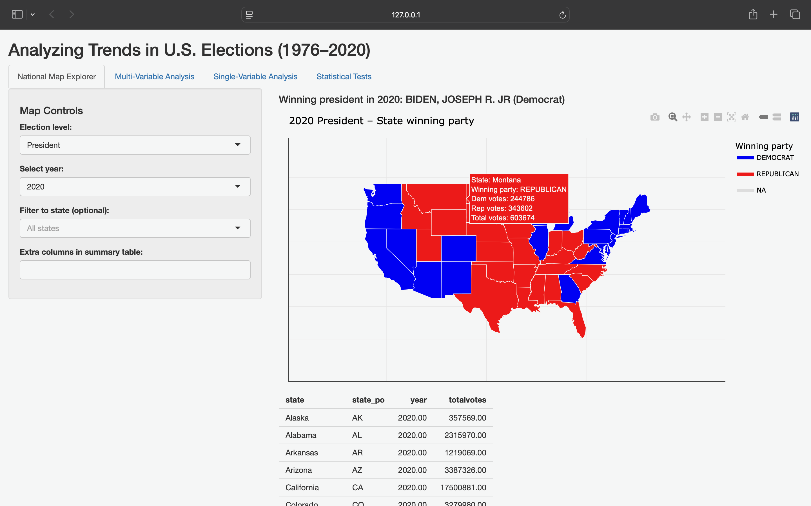
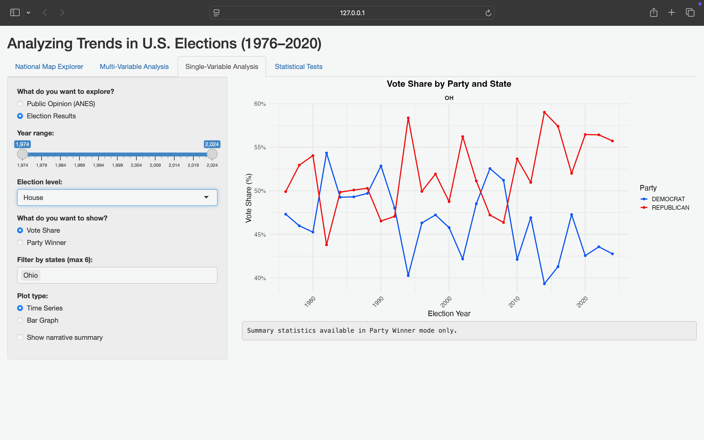
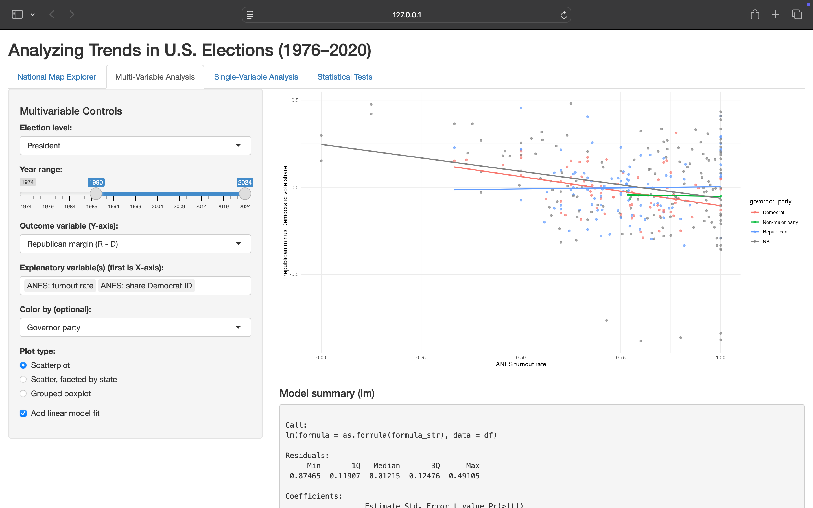

Exploring U.S. Elections and Public Opinion (1976–2020)
1 Usage Purposes and Overview
The Shiny app, titled “Exploring U.S. Elections and Public Opinion (1976-2020), is designed for users who wish to understand how election outcomes and public opinion have changed across U.S. states from 1976-2020. Typical users may be, but are not limited to:
Political science student
Policy analyst
Journalist or Informed citizen
These individuals would likely wish to explore questions such as:
How have Democratic and Republican vote shares changed across U.S. states from 1976 to 2020?
How has public opinion from ANES on partisanship and turnout been related to actual election results?
Are states with Democratic governors associated with different turnout patterns than those with Republican governors?
Is there a tangible relationship between Democratic presidential vote share and Democratic identification in surveys?
The app seeks to answer these questions through four separate tabs:
A National Map Explorer Tab which visualizes the different election outcomes, partisan patterns, and voting breakdowns across the United States.
A Single-Variable Analysis Tab for focused EDA of either ANES or election results.
A Multi-Variable Analysis Tab which examines the different relationships between outcomes and predictors.
A Statistical Tests Tab that features a t-test which compares turnout in states with Democratic v.s. Republican governors, a chi-square test which compares governor party v.s. presidential winning party, and a correlation test between ANES Democratic ID and Democratic vote share.
This app is not used to answer a single question, but rather is to be utilized to provide a minimum viable product that allows users to explore and perform statistical analyses on U.S. election data.
2 Required Packages and Environment
The Shiny app uses several Shiny and visualization tools and packages:
library(dplyr) importing, cleaning, and data transformation
library(ggplot2) graph plotting for visualization purposes
library(readr) importing, cleaning, and data transformation
library(readxl) importing, cleaning, and data transformation
library(shiny) app framework and reactivity
library(maps) for U.S. state polygons
library(plotly) hover functionality on national map
library(scales) formatting vote shares and turnout as percentages
The app does work under the assumption that the R version is > 4.x and latest CRAN versions of these packages as of Fall 2025 are being used. The app is structured according to class conventions, with:
data_raw/ contains clean data for the app
AOSapp.R is the main Shiny app script
3 Data Sources and Structure
Our app uses the American National Election Studies (ANES) Time Series dataset. The full ANES dataset (anes_df) contains 68,224 survey responses and 1,030 variables collected across multiple election years, including respondent demographics, state information, turnout, and presidential vote choice. Additionally we incorporated from the MIT Election Data and Science Lab (MEDSL): U.S. Senate data (senate_df), which includes 3,629 observations and 19 variables; U.S. House election data (house_df), containing 33,807 observations and 20 variables; and U.S. Presidential returns (pres_df), which provide 4,287 observations and 15 variables summarizing candidate vote totals by state. We also had a a supplemental governor dataset (govener_df) was also included, with 4,600 observations and 81 variables related to state-level executive elections and characteristics such as term limits, party control, and years served. For the purposes of this Shiny application, a cleaned subset of ANES survey data was created (anes_clean_subset) by selecting relevant demographic and voting variables and filtering observations to surveys conducted from 1974 onward.
4 Running Code
The app uses three kinds of data:
- Election Results (MIT Election Data and Science Lab)
Presidential elections (1976-2020), state-level candidate vote totals
U.S. Senate Elections, candidate vote totals by state
U.S. House Elections, candidate vote totals by state and district which were cleaned into the following files:
presidential_data_clean.csv
cleaned_senate_data.csv
house_data_cleaned.csv
- Gubernatorial Data
- StateElections_Gub_2021_09_06_Public_Version.xlsx
Cleaned version contains the following variables:
state
year
governor_party
femgov
term_length
gub_election
next_gub_election_year
- StateElections_Gub_2021_09_06_Public_Version.xlsx
- Public Opinion Data (ANES Time Series)
- anes_timeseries_cdf_csv_20220916.csv from the American National Election Studies
Cleaned version contains the following variables:
State
- state_po (postal abbreviation), state
Levels
- “President”, “Senate”, “House”, “Governor”
Vote totals
- candidatevotes, totalvotes, dem_votes, rep_votes, other_votes
Vote shares
- dem_share, rep_share, rep_margin
Governor info
- state x year
ANES summaries
- prop_dem_party_id, prop_rep_party_id, prop_voted
- anes_timeseries_cdf_csv_20220916.csv from the American National Election Studies
5 Basic Structure
The app uses:
election_all_dummy: one row per candidate-state-year.
govener_clean_sub: state-level governor characteristics.
anes_clean_subset: individual-level ANES data with labeled factors, plus state names.
Typical row counts:
elections_all_dummy: tens of thousands of rows.
anes_clean_subset: tens of thousands of respondents across years.
anes_state_year: one row per combination of (year, state) with survey aggregates.
6 Exploratory Data Analysis (EDA) with the App
This section walks through the EDA workflow that the app supports and focuses on how an intended users might interact with it.
- National Map Explorer

- **Inputs:**
- On the **National Map Explorer Tab**, users can:
- choose election level (input\$map_leve):
- "President", "Senate", or "House"
- Select a year (input\$map_year)
- The list of years is reactive; it updates when map_level changes.
- Optionally filter to a single state (input\$map_state)
- For President maps, the default is a accumulation of all states; for other all other levels, users have the ability to isolate a singular state.
- Choose extra columns to show in the summary table (input\$map_info_vars)
- i.e. totalvotes, candidatevotes, dem_votes, rep_votes, rep_margin.
- **Outputs:**
- **Interactive U.S. Map** (output\$us_map using plotlyOutput):
- **President:**
- States are colored by the winning party (Democrat, Republican, Other).
- Hover text shows state, winning party, Dem votes, Rep votes, and total votes.
- **Senate/House**
- States are colored by Republican - Democratic vote shares using a blue-purple-red gradient.
- Negative values (blue) indicate a more Democratic leaning stance; positive values (red) indicate a more Republican leaning stance.
- **Summary Table** (output\$map_summary)
- The top 20 (or less) state-year rows for the selected level and year.
- Includes state, state_po, year, and any user-selected map_info_vars.
- **Overall Winner Text** (output\$map_overall_winner) for presidential years
- Show the candidate and party with the most total votes in the selected year (and state, if filtered).
- **Example Scenario:**
- Question: "How did the 2016 presidential map look, and which party won which states?"
1. Choose "President" in Election level.
2. Set year to 2016.
3. Leave state filter as "All states"
4. Inspect the map: states colored blue/red by winner.
5. Use the summary table and hover text to see vote totals in each state.- Single-Variable Analysis
7 Image
Below is a screenshot of the single variable output. The filters are set to Election results, House level election, Vote shares of Ohio. This shows the tulmotous relationship between Republicans and Democrats.

- The "Single-Variable Analysis" tab has two modes: ANES (public opinion) and Election Results
- **Public Opinion (ANES mode)**
- When input\$single_analysis_data_source == "anes", the sidebar shows:
- **anes_variable:** which public opinion measure:
- **prop_voted:** turnout rate
- **prop_dem_party_id:** share Dem or Dem-leaning
- **prop_rep_party_id:** share Rep of rep-leaning
- **anes_filter:** demographic subset (i.e. black voters, women, high school or less)
- **single_analysis_year_range:** year range slider
- Optional state filter (if states are selected in the UI)
- The server:
1. Filters anes_clean_subset by demographic and year.
2. Computes a numeric "metric" for the selected variable.
3. Aggregates to year x state_name.
4. Produces a time series line plot which shows the evolution of the ANES measure by state.
5. Shows numerical summaries in single_analysis_summary.
6. Optionally displays a narrative (change in percentage points from first to last year) when the user selects "Show narrative summary".
- **Election Results Mode**
- When input\$single_analysis_data_source == "results":
- The user selects:
- **single_analysis_level** – President, Senate, House, or Governor
- **results_metric_type** – share or winner
- **single_analysis_states** - up to 6 state abbreviations
- **single_analysis_plot_type** - time or bar
- The server:
- Filters elections_all_dummy to the chosen level and year range.
- Aggregates to year x state_po, computing:
- dem, rep, other, total, dem_share, rep_share, and winner.
- Plots either:
- vote share time series / bar chart by party and state
- Winning party over time (tile or bar plot of winner counts)
- For example:
- *Question:* “How has Democratic vs Republican presidential vote share changed in PA and WI since 2000?”
1. Data source: Election Results
2. Level: President
3. Metric type: Vote Share
4. States: PA, WI
5. Plot type: Time Series
6. Year range: 2000-2020
- The plot will show Dem/Rep vote shares across elections, faceted by state.- Multi-Variable Analysis 
Above is a screenshot of our multi-Variable tab. This tab shows that as ANES-measured turnout increases, the Republican presidential vote margin generally decreases.
1. Multi-Variable Analysis
- The Multi-Variable Analysis tab allows the user to explore relationships between two variables in either public opinion or election outcomes.
- Public Opinion (ANES mode)
- input\$multi_analysis_data_source == "anes”, causes the sidebar to displays: \* x_var – the ANES variable mapped to the x-axis \* y_var – the ANES variable mapped to the y-axis \* multi_analysis_filter – demographic subset (e.g., women, Black voters, low education)
- multi_analysis_year_range – year selection slider
- multi_analysis_states – optional state selection
- The server:
1. Filters anes_clean_subset by the user-selected demographic and year window.
2. Calculates numeric rates for x_var and y_var.
3. Aggregates data to year × state_name
4. Produces a scatter plot with optional smoothing (e.g., loess line) to show association.
5. Displays statistical summaries, including correlation between x and y.
6. Provides interpretive text describing direction/strength of the relationship.
- Example question the user can answer using this tab:
- “Do states with higher Democratic party identification also show higher voter turnout?”The resulting scatter plot shows turnout on the y-axis vs. Dem party ID on the x-axis, with each point representing state-level data in a given year.
8 Statistical Analysis: Inputs, Models, and Interpretation
The Statistical Tests tab lets users run three pre-defined analyses that link election results and public opinion.
User controls:
Choose a test:
Turnout by governor party (t-test)
Governor vs. president party alignment (chi-square)
ANES Democratic ID vs. Democratic vote share (correlation)
Select a year range with a slider
For the turnout–governor-party t-test, the app automatically restricts the data to 2001 and later
For the other tests, the app uses the chosen range but caps the maximum at the last year with data
Behind the scenes
Filters data to valid years and state–year combinations
Runs:
A two-sample t-test comparing average ANES turnout by governor party
A chi-square test of independence between governor party and presidential winning party
A Pearson correlation between ANES Democratic ID and Democratic vote share
Outputs:
The formal test result (test statistic, p-value, and, when relevant, confidence interval)
A small table showing the first rows of the data used in the test, so users can see exactly what observations went into the analysis
9 Literature Review (Sources)
References
Hill, K. Q. (2013). Analyzing purple state trends in U.S. presidential elections (1976–2020). University of Georgia OpenScholar.
Lublin, D. (2013). Battleground states and voter participation in U.S. presidential elections: An empirical test.
McKee, S., & Teigen, J. (2013). Swing state voter behavior and mobilization. ScholarWorks at University of Maine.
MIT Election Data and Science Lab. (2021). U.S. president 1976–2020 county and state election returns.
U.S. Election Assistance Commission. (2011). The Electoral College.
Warshaw, C. (2020). Local elections and representation in the United States. Annual Review of Political Science, 23, 151–170. foodies
10 Individual Contributions
- Syd Affolter:
- Basic app outline;
- Map tab;
- Contributor Progress Report;
- ReadMe;
- Contributor Multi-Variable tab;
- Amal Abdi:
- Single-Variable tab;
- Progress Plan
- Cleaned ANES and governor data;
- Contributor Multi-Variable tab;
- Contributor Progress Report;
- Olivia Bohart
- Statistical Analysis tab;
- Cleaned senate, president, house data;
- Contributor Multi-Variable tab;
- Contributor Progress Report;
- Vignette;